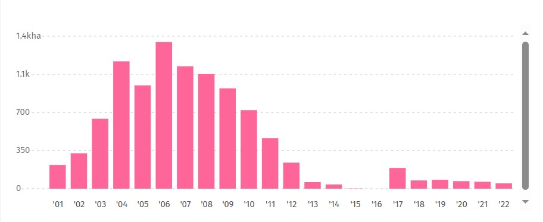
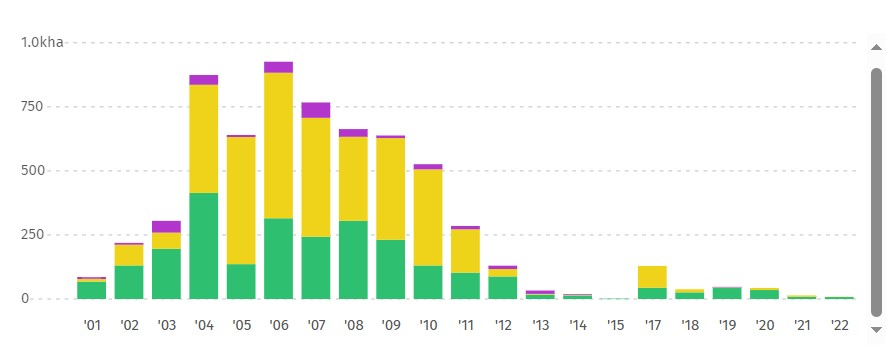

Statistics Of Deforestation In Pakistan
Pakistan is forest deficient country, mainly due to arid and semi-arid climate in large parts of the
country.
-
The Country is maintaining 4.51 million hectares to 5.01 percent area under forest cover, out of
which 3.44 million hectres forests exist on state-owned lands and remaining on communal and private
lands.
- From 2001 to 2022, Pakistan lost 9.80 kha of tree cover, equivalent to a 1.0% decrease in tree cover since 2000, and 3.62 Mt of CO₂e emissions

-
Though the forestry having meager share of 2.1 percent in agriculture, it provides foundations of
life on earth through ecological function, regulates the climate and water resources and serves as habitat
for plants and animals.
- In Pakistan from 2001 to 2022, 4.9% of tree cover loss occurred in areas where the dominant drivers of loss resulted in deforestation.
